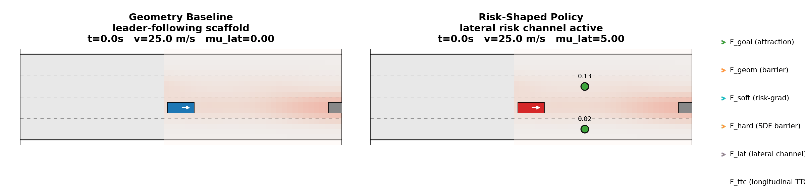
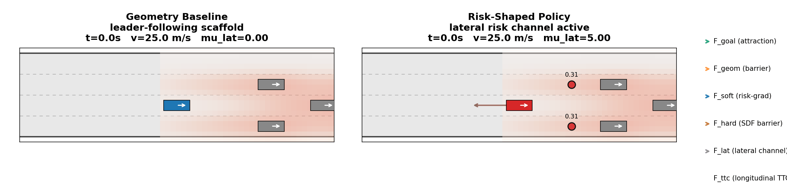

Behavior
The same mechanism, two failure modes it avoids




A robot can see that the ground to its left is safer and still be unable to go there. We give material risk its own force channel and admit it only when a local feasibility witness says a lower-risk motion actually exists.
A geometry-only navigator treats two equally clear routes as identical, even when one is firm ground and the other is wet clay. The obvious fix is to add a material-risk gradient that pushes away from the costly surface. That fix fails in a specific way. The low-cost side may be walled off by a hard hazard, or it may only open several steps later. An always-active material force reacts to these apparent escapes and steers toward motions the robot cannot take.
So the governing question is not how heavily to weight material risk. It is when material information should be admitted to reshape the motion at all.
We build on an inherited geometry-only port-Hamiltonian navigator and add exactly two things: a material-risk force with its own direction, and a witness that gates its exposure. Because the channel is separable, direction, strength, and exposure can each be intervened on independently.
Among K sampled short-horizon primitives, the gate opens only if one improves risk by a margin, clears the hazard field, and is traversable. The witness is evidence that a feasible lower-risk motion exists. It is never tracked as a reference.
The hard-hazard force acts at every step. Gating applies to the material channel alone, so suppression never trades away collision avoidance.
Everything is computed inside the current local patch. The policy is reactive at 2.3 ms/step while the planners it matches spend 9.8 to 68.3 explicit replans.


They frequently are. A receding-horizon planner evaluates multi-step consequences, optimizes a whole control sequence, carries dynamics and constraints explicitly, escapes some local minima, and attains lower trajectory risk whenever its model and horizon are adequate. None of that is in dispute.
MPPI instead samples many noisy control sequences, rolls each one out, weights them by exponential trajectory cost, and updates the nominal sequence. Both pay that cost at every control step.
A tight latency budget. An inaccurate dynamics or prediction model. Moving objects that do not follow their predicted trajectories. Too few samples, or a horizon too short to see the event, or long enough but too expensive to run. Optimization that stalls or goes numerically unstable. A plan that must be regenerated from scratch, repeatedly, when only local sensing is available and no reliable long-range prediction exists.
Our field asks for much less per step: one local patch, a small set of feasibility witnesses, a coefficient prediction, and a single force composition and integration. On the RELLIS-Dyn material aggregate that buys planner-level success at a fraction of the cost.
| Method | Success | Explicit replans | Compute |
|---|---|---|---|
| Local A* (budgeted) | 0.983 | 9.8 | 8.4 ms/step |
| MPC (budgeted) | 0.967 | 11.1 | 42.2 ms/step |
| Material-aware field (ours) | 0.980 | 0 | 2.3 ms/step |
RELLIS-Dyn three-event material aggregate. All methods see the same per-step local BEV patch.

The claim is not: our method universally beats MPC and MPPI.
The claim is: our method can approach planner-level success using a substantially cheaper zero-replan local field, and can be preferable when computation, model accuracy, or the opportunity to replan is limited. The episode above is a qualitative counterexample to planning is always better, not evidence of dominance.
Each claim has a matching intervention that changes one thing. The headline result is the gate toggle: holding the trained model fixed and switching only the gate removes almost all soft-force exposure without changing where the robot drives.
| Intervention | Baseline | Ours | Reading |
|---|---|---|---|
| Soft-force exposure (gate off → on) | 1.000 | 0.061–0.094 | 91–94% removed |
| Premature activation vs DWA | 0.950 | 0.380 | CI [−0.67, −0.47] |
| Success after the escape opens | 0.480 | 0.610 | CI [0.03, 0.23] |
| Explicit replans | 9.8–68.3 | 0 | 2.3 ms/step |
| λs recovered, off-road → dense semantic | 0.107 | 1.813 | ~17× without retuning |
Delayed-required escape, 100 paired episodes on identical seeds and events. Coefficient range is the one-factor λs intervention across RELLIS R1 and DFC2018.